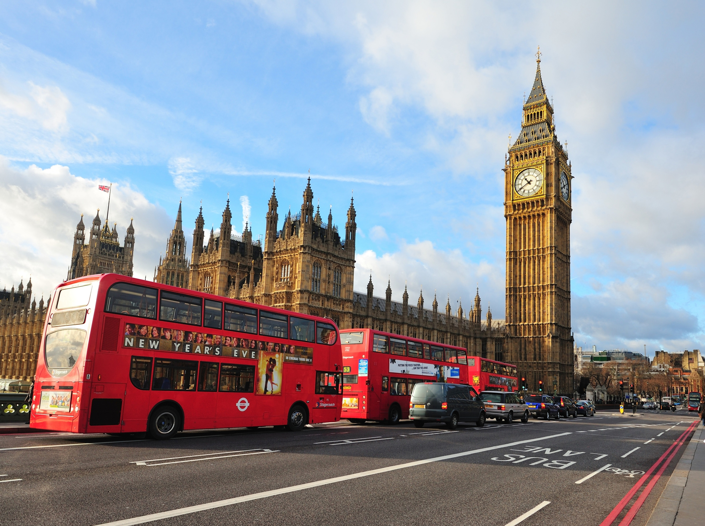
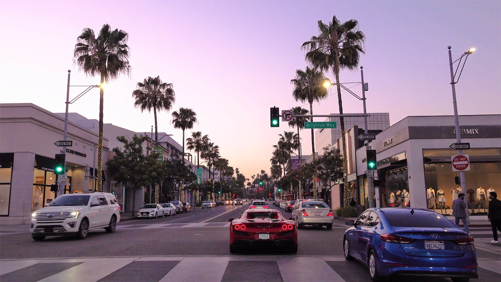
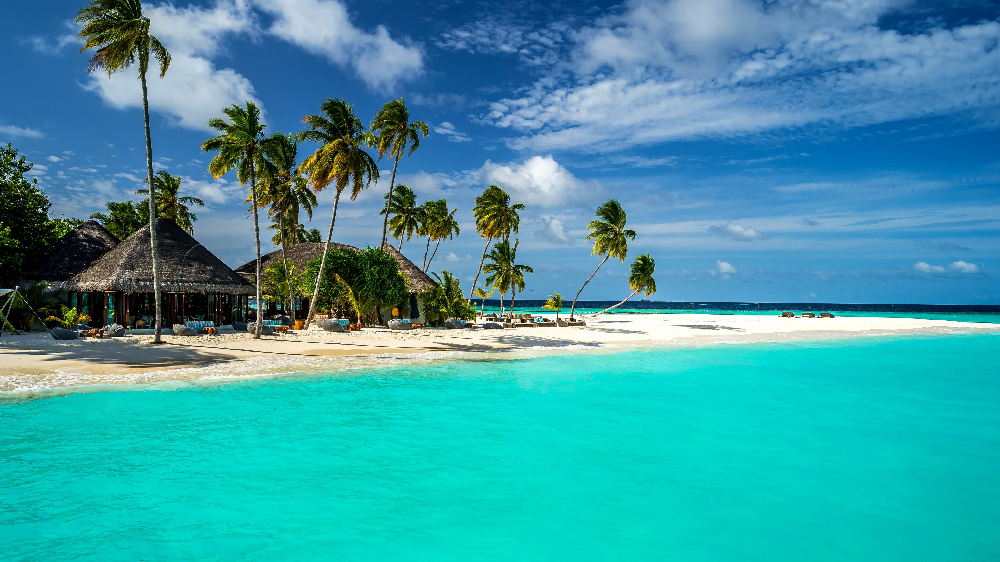
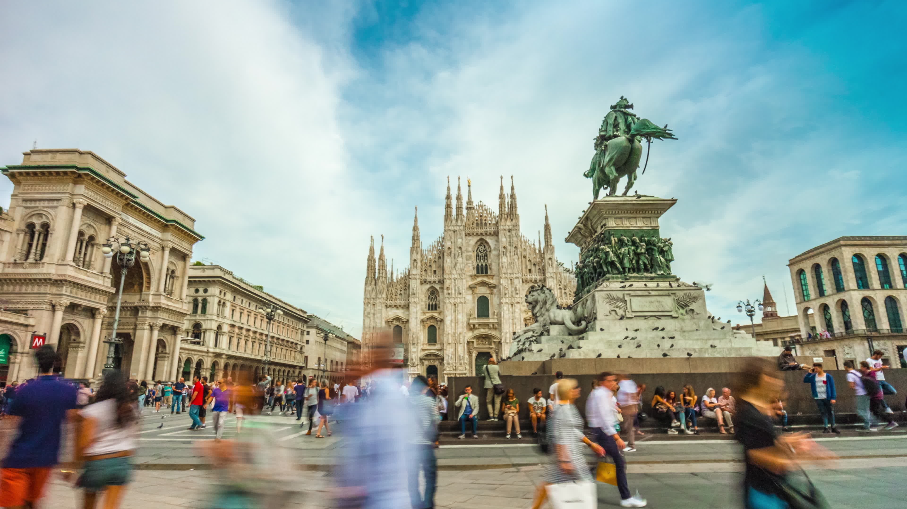
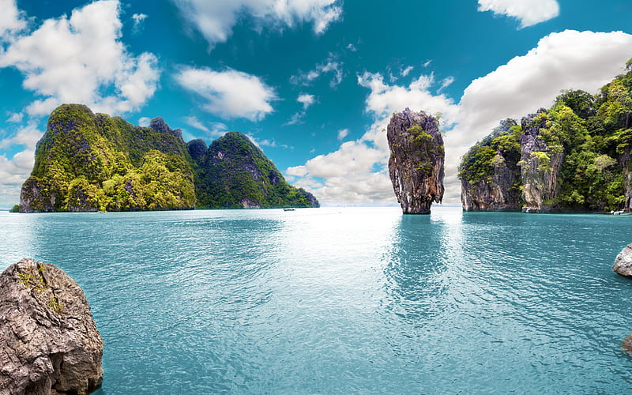

Locations

|
Paris - The City of LightParis is the capital of France and is often called "The City of Light." It's famous for its beautiful landmarks like the Eiffel Tower, the Louvre Museum, and Notre-Dame Cathedral. The city is known for its delicious food, stunning art, and romantic atmosphere. In Paris, you can enjoy tasty pastries, fine dining, and relaxing at cozy cafes. The city is full of museums, art galleries, and theaters that showcase amazing talent. It's also a great place to shop for fashionable clothing and accessories. |
|  |
Los Angeles - The City of DreamsParis is the capital of France and is often called "The City of Light." It's famous for its beautiful landmarks like the Eiffel Tower, the Louvre Museum, and Notre-Dame Cathedral. The city is known for its delicious food, stunning art, and romantic atmosphere. In Paris, you can enjoy tasty pastries, fine dining, and relaxing at cozy cafes. The city is full of museums, art galleries, and theaters that showcase amazing talent. It's also a great place to shop for fashionable clothing and accessories. |
|  |
Los Angeles - The City of DreamsParis is the capital of France and is often called "The City of Light." It's famous for its beautiful landmarks like the Eiffel Tower, the Louvre Museum, and Notre-Dame Cathedral. The city is known for its delicious food, stunning art, and romantic atmosphere. In Paris, you can enjoy tasty pastries, fine dining, and relaxing at cozy cafes. The city is full of museums, art galleries, and theaters that showcase amazing talent. It's also a great place to shop for fashionable clothing and accessories. |
|  |
Maldives - Paradise on EarthThe Maldives, a tropical paradise in the Indian Ocean, is renowned for its pristine white-sand beaches, crystal-clear turquoise waters, and overwater bungalows. This island nation offers a serene escape from the hustle and bustle of city life. It's a snorkeler's and diver's dream, with vibrant coral reefs and diverse marine life. The Maldives is all about relaxation and rejuvenation, where you can unwind in luxurious resorts and enjoy stunning sunsets. Whether you're looking for a romantic getaway or an underwater adventure, the Maldives promises a slice of heaven on Earth. |

|
Dubai - The City of Modern WondersDubai, a city in the United Arab Emirates, is a marvel of modernity. It's known for its futuristic skyline, including iconic structures like the Burj Khalifa, the world's tallest building. Dubai is a hub of luxury shopping, with extravagant malls and traditional markets. The city seamlessly blends tradition with innovation, offering cultural experiences, such as exploring the historic Al Fahidi neighborhood, as well as thrilling adventures like desert safaris. With its year-round sunshine, stunning architecture, and a dynamic atmosphere, Dubai is a city that captures the imagination. |

|
Barcelona - A Tapestry of Culture and CreativityBarcelona, the capital of Catalonia, Spain, is a city where artistic inspiration meets Mediterranean charm. It's celebrated for its unique architecture, including Antoni Gaudí's breathtaking creations like the Sagrada Familia and Park Güell. The city offers a delightful blend of cultural experiences, from exploring the historic Gothic Quarter to the lively atmosphere of Las Ramblas. Barcelona's pristine beaches, delectable cuisine, and a thriving arts scene make it a destination for all senses. With its colorful streets, dynamic energy, and a love for life, Barcelona embodies the spirit of Catalonia. |
|  |
Milan - Italy's Fashion and Design HubMilan, the fashion capital of Italy, is a dynamic metropolis renowned for its style, culture, and innovation. It's a city where history and modernity intersect seamlessly. Milan is famous for its exquisite fashion boutiques, such as those in the Quadrilatero della Moda, and its dedication to design, showcased at the annual Milan Design Week. The city's rich heritage is evident in its iconic landmarks, including the awe-inspiring Milan Cathedral and the historic Sforza Castle. Milan's culinary scene is a delight for food enthusiasts, with a wide range of trattorias and world-class restaurants. With its blend of sophistication and tradition, Milan stands as a global center for art, fashion, and contemporary living. |
|  |
Phuket - Thailand's Tropical GemPhuket, the largest island in Thailand, is a tropical paradise that enchants visitors with its pristine beaches, lush rainforests, and vibrant culture. The island is known for its stunning coastline, with postcard-worthy beaches like Patong, Kata, and Karon. Phuket offers a blend of relaxation and adventure, from basking in the sun to exploring the underwater wonders of the Andaman Sea. The vibrant Patong Beach area boasts a lively nightlife scene, while the Old Town is a treasure trove of history and culture. Phuket is a place where you can savor delicious Thai cuisine, embark on island-hopping adventures, and immerse yourself in the warm hospitality of the locals. With its natural beauty and endless possibilities, Phuket is a sought-after destination for travelers seeking an unforgettable island getaway. |